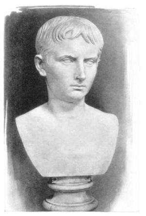

Caesar's Cipher
ROT13, which stands for "rotate by 13 places", is a special case of Caesar's cipher. It is a substitution cipher that takes each letter and shifts it 13 places in the alphabet. Julius Caesar was a roman politician/general who used a ROT3 cipher to protect confidential military messages. Due to his fame and early use of this method, the technique has become associated with him.
Enter a message to be encoded (takes alphabetic characters only)